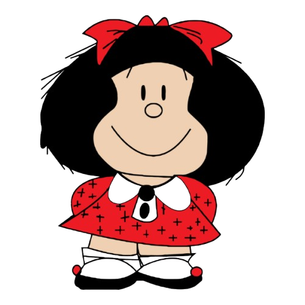

DSL para Criação de Histórias em Quadrinhos
Exemplos gerados com Guile Scheme
O Despertar do Poder - Floresta Proibida
Joao (pensa)
: Eu sinto uma presença... ela está perto.
O silêncio da floresta é interrompido.
Reencontro - Cafeteria da Cidade

Joao (diz)
: Quanto tempo, Maria!
Maria (diz)
: Que coincidência te encontrar por aqui!
Um reencontro inesperado na cafeteria.